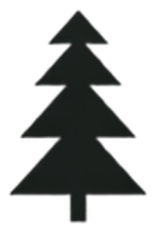

{{ t.nav.aanpak }}
{{ t.nav.projecten }}
{{ t.nav.nieuws }}
{{ t.nav.faq }}
{{ t.nav.contact }}
NL
EN
{{ t.nav.cta }}
{{ t.hero.badge }}
{{ t.hero.title }}
{{ t.hero.desc }}
{{ t.hero.ctaPrimary }}
{{ t.hero.ctaSecondary }}
{{ t.hero.proofLabel }}
{{ p }}
{{ t.nav.aanpak }}
{{ step.n }}
{{ step.title }}
{{ step.desc }}
{{ t.demo.kicker }}
{{ t.demo.title }}
{{ t.demo.desc }}
{{ tabItem.label }}
{{ t.projects.incident.tag }}
{{ t.projects.incident.emailLabel }}
{{ t.projects.incident.emailMeta }}
{{ t.projects.incident.emailBody }}
{{ t.projects.incident.btn }}
{{ t.projects.incident.resultLabel }}
{{ t.projects.incident.idle }}
{{ t.projects.incident.loading }}
{{ t.projects.incident.locLabel }}
{{ t.projects.incident.loc }}
{{ t.projects.incident.catLabel }}
{{ t.projects.incident.cat }}
{{ t.projects.incident.dateLabel }}
{{ t.projects.incident.date }}
{{ t.projects.incident.warning }}
{{ t.projects.zzp.tag }}
{{ t.projects.zzp.inputLabel }}
{{ t.projects.zzp.btn }}
{{ t.projects.zzp.resultLabel }}
{{ t.projects.zzp.idle }}
{{ t.projects.zzp.loading }}
{{ zzpVerdict }}
{{ zzpReason }}
{{ zzpScoreLine }}
{{ t.projects.afspraak.tag }}
{{ t.projects.afspraak.presentatieLink }}
{{ t.projects.afspraak.cardLabel }}
{{ t.projects.afspraak.klant }}
{{ t.projects.afspraak.klantNaam }}
{{ t.projects.afspraak.afspraakLabel }}
{{ t.projects.afspraak.afspraakVal }}
{{ t.projects.afspraak.statusLabel }}
{{ apStatusLabel }}
{{ t.projects.afspraak.desc }}
{{ t.projects.afspraak.btn }}
{{ t.projects.afspraak.chatLabel }}
{{ t.projects.afspraak.idle }}
{{ t.projects.afspraak.msg1 }}
{{ t.projects.afspraak.msg2 }}
{{ t.projects.afspraak.msg3 }}
{{ t.projects.boeking.tag }}
{{ t.projects.boeking.introLabel }}
{{ t.projects.boeking.intro }}
{{ boekBtnLabel }}
{{ t.projects.boeking.chatLabel }}
{{ t.projects.boeking.idle }}
{{ msg.text }}
{{ msg.text }}
{{ t.projects.protocol.tag }}
{{ t.projects.protocol.inputLabel }}
{{ t.projects.protocol.btn }}
{{ t.projects.protocol.tryEscalation }}
{{ t.projects.protocol.resultLabel }}
{{ t.projects.protocol.idle }}
{{ t.projects.protocol.loading }}
{{ t.projects.protocol.normalTitle }}
{{ t.projects.protocol.normalCategory }}
{{ t.projects.protocol.normalExcerpt }}
{{ t.projects.protocol.normalSource }}
{{ t.projects.protocol.escalationBanner }}
{{ t.projects.protocol.escalationNote }}
{{ t.nav.nieuws }}
{{ t.nieuws.title }}
{{ item.date }}
{{ item.title }}
{{ item.desc }}
{{ item.linkLabel }}
{{ t.faq.kicker }}
{{ t.faq.title }}
{{ faq.q }}
+
{{ faq.a }}

{{ t.contact.title }}
{{ t.contact.desc }}
{{ t.contact.founder }}
{{ t.contact.email }}
{{ t.contact.nameLabel }}
{{ t.contact.emailLabel }}
{{ t.contact.messageLabel }}
{{ t.contact.submit }}
{{ contactStatus }}